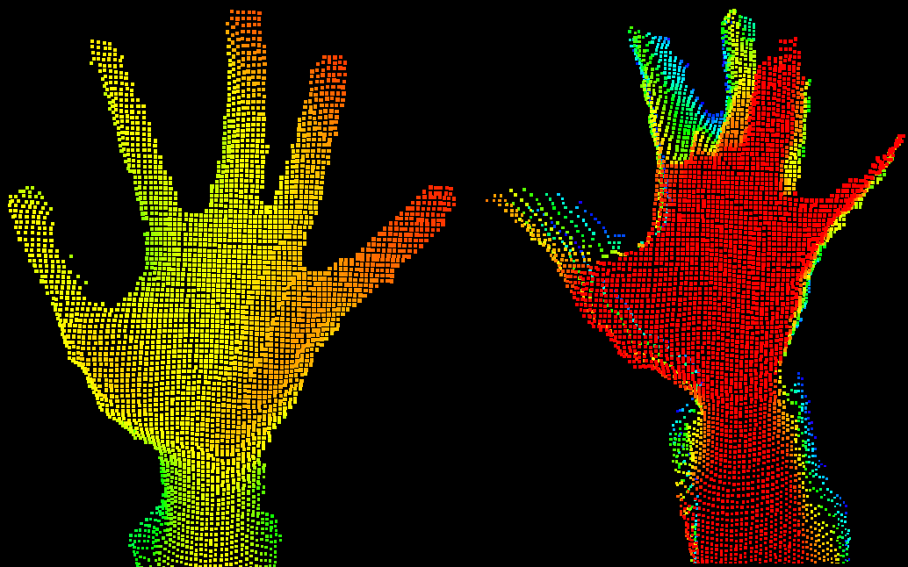
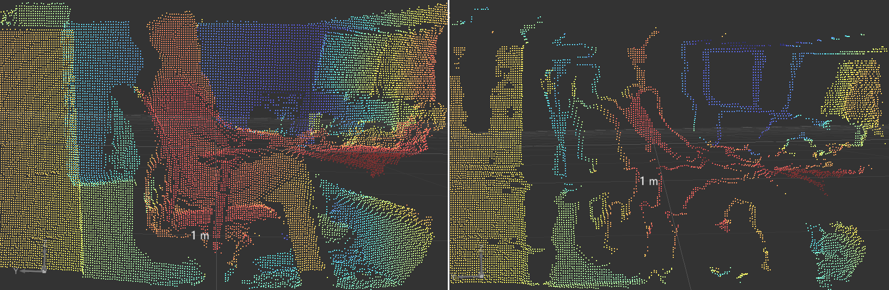

Motion Blur
In iToF imaging, motion blur occurs when either the object or the camera is moving during the exposure period. This creates artifacts in the depth data due to inconsistencies in how the sensor measures the phase shift between emitted and received light.
Object Movement
If an object moves while the sensor is measuring depth, the light reflected back to the sensor will have traveled different distances at different points during the exposure, causing inaccuracies in the depth map. Motion blur causes the boundaries of objects in the depth map to appear smeared or stretched, making it difficult to discern the true edges or distances of objects. When objects move rapidly, there can be time-varying inconsistencies in the depth data, leading to visible artifacts or fluctuating depth values.
A simple example of this is a waving hand. The picture below demonstrates the effect: the hand on the left was recorded without movement, while the hand on the right was recorded during movement. Disclaimer: The scene was deliberately arranged as a worst-case scenario, with a hand moving unusually fast; the image was not captured under typical conditions.

Camera Movement
In scenarios where the camera itself moves during depth measurement, the entire scene’s depth information can become slightly inaccurate, as different parts of the scene are captured from slightly different perspectives.
The image below illustrates the impact of motion blur on the entire scene when the camera moves too quickly. Disclaimer: The camera was intentionally moved much faster than we would expect in a typical use case. The image was captured under these conditions to demonstrate a worst-case scenario, not under normal operating circumstances.

There are two common mitigation techniques for motion blur in iToF available for O3R cameras:
Faster frame rates: Increasing the frame rate helps capture scenes with fast-moving objects more accurately by reducing the time between depth measurements but it will not reduce the motion blur within each single frame.
The videos below illustrate this effect. The scene on the left was recorded at 5Hz, while the scene on the right was recorded at 20Hz.
|
|


As a point cloud user, you can simply change the starting frame rate from 10fps to 20fps to reduce motion blur if it occurs. ODS customers are already covered as 20fps is the standard frame rate.
Shorter Exposure Times: Reducing the exposure time minimizes the likelihood of motion blur by limiting the time during which the object or camera can move. However, shorter exposure times reduce the amount of light collected, potentially affecting depth accuracy and measurement range. The starting exposure time is set to 5000us for best performance and can be changed to as low as 1000us.
The videos below illustrate this effect. The scene on the left was recorded with a 1ms exposure time, while the scene on the right was recorded with a 5ms exposure time.
|
|